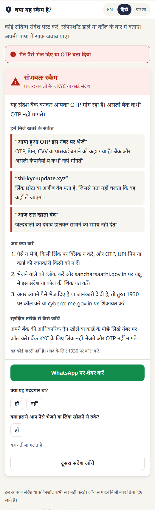
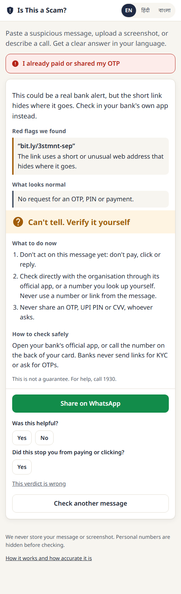
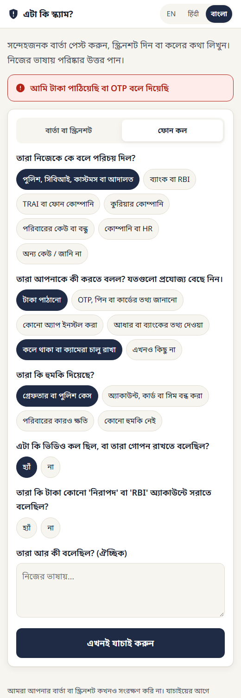

Case study · Personal project · Oct 2026
Is This a Scam?
A scam checker for India in Hindi, Bengali and English that says "can't tell" instead of guessing.
Akshay Dhar · akshaykumardhar14@gmail.com · is-this-a-scam.onrender.com · github.com/AKSHAYKUMARDHAR/Is-This-A-Scam
The problem
Indians lost ₹19,813 crore to cyber fraud in 2025, and 77% of it went to fake investment schemes (I4C data). Telecom and inbox filters act silently, and only on what they are sure about. What gets through is the ambiguous message or call a person is staring at, wondering "is this real?" Nobody gives that person a clear, explained answer in their own language.
The market is crowded: Airtel and Google screen billions of messages, and Truecaller and WhatsApp are adding scam checks. So the product can't win on detection volume. It wins on three things no checker I reviewed combines: honest uncertainty, coverage of investment pitches and phone calls (the scams behind 85% of losses, which link filters rarely see), and Bengali alongside Hindi and English.
Who it's for
- The unsure recipient, often 45 to 70, who gets a "your KYC expires today" SMS or a caller claiming to be police.
- The family guardian who handles a parent's phone safety and shares answers into family WhatsApp groups. They are the growth channel.
- The targeted investor added to a "stock tips" group, the 77%-of-losses case.
- The small shopkeeper shown a "payment successful" screenshot, where the right answer is "a screenshot can never prove payment".
What I built
A mobile-first web app with no login. Paste a message, upload a screenshot, or answer five questions about a call, and get one of three verdicts: Likely scam, Can't tell, verify it yourself, or No scam signs found. It never says "safe".



Also in the product: an "I already paid" button that goes straight to the 1930 helpline steps, a WhatsApp share card that never includes the original message, a verdict-first vs explanation-first A/B split, feedback buttons, and an event log that stores no message text. When the free model quota runs out, messages still get the fixed rules' answer instead of an error.
Product decisions
- Three verdicts, never "safe". One wrong "scam" on a genuine bank message costs more trust than ten honest "can't tell" answers.
- Rules decide the cases that are always fraud. Banks never ask for an OTP, and you never need a PIN to receive money. Every hard rule is tested against genuine look-alikes: OTP messages that say "do not share", delivery OTPs you do give the agent, police advisories about digital arrest.
- Self-consistency instead of self-reported confidence. Two runs must agree. The PRD planned three; the golden set showed the third never changed a verdict (128 of 128), so I cut it and saved a third of the cost.
- No ask, no "Likely scam" from the model alone. A first-contact opener ("this is my new number, save it") asks for nothing yet, so nothing can be lost yet. The card says "can't tell" and what to watch for in the next message. I added this rule after my first release run failed on exactly these messages.
- The injection guard sits outside the model, a lesson from my UPI agent, where a system prompt alone did not stop an injection.
- Advice is never generated. Next steps, numbers and links are fixed templates in three languages; the model's quotes are checked against the message and dropped if they don't appear.
How I tested it
I froze a 200-message held-out set in git before writing any rule or prompt, tuned on a separate 200-message golden set, and ran the held-out set once on the frozen configuration. When it failed, I fixed the problem on the golden set only, wrote 50 fresh messages and froze them before the fix existed, and ran those once. The messages are in Hindi, Bengali and English, including Hindi and Bengali typed in Latin script, plus phone-call descriptions.
| Release run | False alarms | Scams cleared | Scams caught | Ambiguous → can't tell |
|---|---|---|---|---|
| Run 1 · 200 messages | 0 / 100 | 0 / 80 | 100% | 50% |
| Run 2 · 50 fresh messages, after the fix | 1 / 14 | 0 / 16 | 87.5% | 85% |
In run 1, the rules alone caught 47.5% of scams with no false alarm, and requiring two model runs to agree removed the one false alarm a single run made.
Release gate, run 2
- Ambiguous messages get "can't tell" ≥ 70%: 85% (run 1: 50%)
- Scams cleared ≤ 5%: 0 of 16
- Scam type correct ≥ 85%: 100%
- Prompt-injection suite, zero verdict flips: 0 of 50
- False alarms ≤ 2% of genuine messages: 1 of 14
- Native-speaker review of the explanations: pending
What failed, and what's next
Two honest caveats from run 2. On those fresh messages the model alone would already have reached 80% on ambiguous messages, so the run shows the target is met, not that my rule is what meets it; the rule also turned two "press 9"-style scams into "can't tell", though neither was cleared. And with only 14 genuine messages, one mistake is 7%: my second test set was too small to test a 2% bar fairly.
Next: treat bank alerts that point to an official helpline as a known genuine pattern, re-test on at least 100 genuine messages, preferably real ones, and run the second-labeller and native-speaker reviews, whose kits are in the repo.
What I learned
- A held-out set frozen before the rules is what makes the numbers worth trusting, and every fix needs a fresh one.
- Check the counterfactual. Re-scoring the same cached answers without my fix showed how little it did on the second set.
- Size a test set for the bar it tests: 14 genuine messages can't measure a 2% false-alarm rate.
- Measure the expensive part. The third model run looked prudent and did nothing.
- Free tiers shape evaluation plans: 500 requests a day per project decided how much I could test, and in what order.
All 500 test messages are hand-written, modelled on publicly reported scam patterns and real message formats, by the same person who wrote the rules; results on real messages may differ. Every number comes from a logged run in the repo.